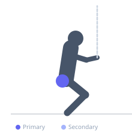
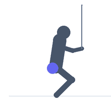

Exercise guide / Lateral Band Walks
Lateral Band Walks
Lateral band walks are performed with a resistance band placed above the knees or around the ankles while moving sideways in an athletic stance. This exercise directly targets the gluteus medius and hip abductors responsible for lateral pelvic control and knee tracking stability. It is a staple in lower limb rehabilitation and sports performance warm-ups to prevent injury and improve dynamic hip strength.
Primary muscles
gluteus medius
Secondary muscles
tensor fasciae latae
Stabilizers
quadriceps
Equipment
Resistance Band (Loop / Mini Band)


Starting position
- Place a resistance band just above the knees. Stand with feet shoulder-width apart and lower into a slight squat or athletic stance.
Setup
- Choose a band resistance appropriate for the population — lighter for rehabilitation, heavier for performance warm-up.
Steps
- Step 1: Adopt an athletic stance with knees slightly bent and hips slightly hinged.
- Step 2: Take a controlled lateral step with the lead foot, maintaining band tension.
- Step 3: Bring the trail foot to restore hip-width stance — keep constant tension throughout.
- Step 4: Complete prescribed steps in one direction, then repeat to the other side.
Coaching cues
- Maintain tension on the band throughout — never let it go slack
- Keep knees tracking over middle toes
- Drive the step from the hip, not the knee
Breathing
- Breathe naturally throughout the movement. Do not hold your breath.
Range of motion
- Steps should be moderate width — enough to maintain tension without causing the torso to tilt laterally.
Tempo
- 1 second per step, controlled throughout
Common mistakes
- Allowing knees to cave inward (valgus) during lateral steps
- Moving too fast and losing control of the step
- Letting feet come fully together reducing band tension
Safety
- Ensure the band is seated comfortably above the knee — not on the kneecap
- Consult a physiotherapist for use in formal rehabilitation programs
Training
- endurance: 10–20 reps
- mobility: 5–10 reps
- endurance: 2–4 sets
- mobility: 2–3 sets
- Rest: {'endurance': 45, 'mobility': 60}